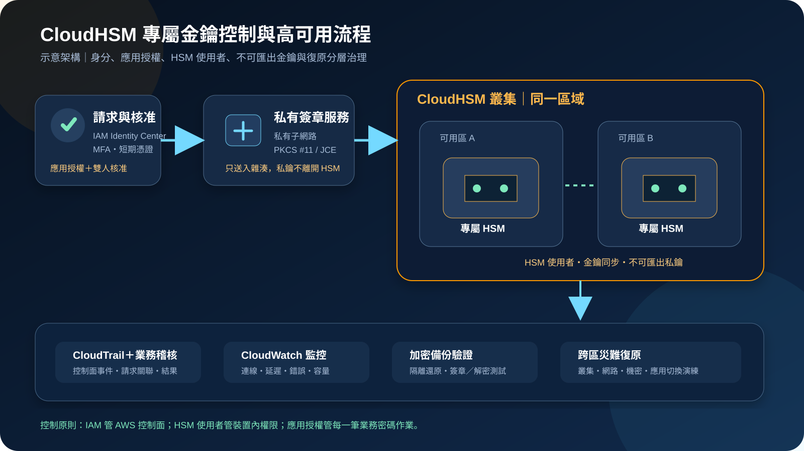

AWS CloudHSM：專屬 HSM、金鑰控制與高可用治理
AWS CloudHSM 提供位於客戶 VPC 內的專屬硬體安全模組叢集，讓應用程式透過標準密碼介面執行金鑰產生、簽章、加解密與其他密碼作業。它換來更直接的金鑰控制與相容性，也把叢集容量、HSM 使用者、金鑰可用性、用戶端整合與災難復原責任交回客戶。
作者：Dr. William｜查閱與發布：2026-11-03
服務定位
AWS CloudHSM 是受管的硬體安全模組服務。AWS 負責 HSM 硬體供應、基礎設施與故障替換；客戶建立叢集、在選定可用區加入 HSM，並於自己的 VPC 中透過 CloudHSM 用戶端軟體與密碼程式庫連線。應用程式可使用 PKCS #11、JCE、OpenSSL Dynamic Engine 或 KSP 等受支援介面，實際可用演算法、功能與平台須依目前 HSM 類型及官方相容性文件確認。
CloudHSM 與 AWS KMS 的主要差異在控制面與操作責任。KMS 提供與 AWS 服務深度整合的受管金鑰服務；CloudHSM 則讓客戶管理 HSM 內的使用者、金鑰物件與密碼作業，適合既有 HSM 應用遷移、自有憑證授權中心、資料庫透明加密、數位簽章或需要標準 HSM API 的系統。
核心概念與服務邊界
叢集、HSM 與網路
- 叢集：同一區域內的一組 HSM，共享使用者、金鑰與政策狀態。
- 多可用區：在不同可用區配置 HSM，降低單一可用區或單一裝置故障影響。
- 彈性網路介面：每個 HSM 透過客戶 VPC 子網路中的介面提供私有連線。
- 用戶端：應用主機安裝 CloudHSM 用戶端與適用的密碼程式庫，並維護連線設定。
- 安全群組：只允許核准應用子網路或主機存取必要連接埠，避免把 HSM 暴露給整個 VPC。
身分、金鑰與備份
- 叢集啟用：使用信任錨點驗證初始 HSM 身分後，才能初始化叢集。
- HSM 使用者：管理員與密碼使用者等角色在 HSM 內管理，不等同於 IAM 身分。
- 金鑰物件：金鑰在 HSM 內產生或依支援方式匯入，屬性決定用途、共享與可匯出性。
- 自動同步：叢集內 HSM 會同步使用者與金鑰，但應用仍要正確處理連線及重試。
- 備份：服務會建立加密備份；復原時仍須驗證使用者、金鑰、應用設定與實際密碼作業。
適合與不適合的使用情境
適合
- 既有應用依賴 PKCS #11、JCE、OpenSSL Engine 或 Windows KSP，且需要遷移至 AWS。
- 私有 CA、程式碼簽章、文件簽章或支付相關流程需要專屬 HSM 內的不可匯出金鑰。
- 資料庫、應用或設備平台需要由客戶直接管理 HSM 使用者、金鑰屬性與密碼作業。
- 組織政策要求金鑰只在受驗證的專屬硬體安全邊界內使用。
- 跨多個應用共享同一 HSM 叢集，但能以分離使用者、金鑰擁有權及網路邊界治理。
不適合或不能單獨完成
- 只需要讓 S3、EBS、RDS 或其他 AWS 服務使用受管加密，且沒有標準 HSM API 或專屬裝置要求。
- 團隊無法維護多可用區容量、用戶端套件、HSM 使用者、密碼輪替、金鑰清冊與復原演練。
- 把資料庫密碼、API Token、cookie 或一般設定值直接當作 HSM 金鑰管理；此類機密應使用 Secrets Manager 或 Parameter Store。
- 希望單一 CloudHSM 叢集直接跨區提供同步高可用；CloudHSM 叢集是區域資源，跨區必須另行設計。
- 期望 HSM 自動判斷應用授權、修補弱點、防止資料外洩或替代備份與事件應變。
示意故事案例：以專屬 HSM 保護電子文件簽章
以下為示意案例，不代表特定企業或正式部署。 一家電子文件平台需要為長期保存的合約產生數位簽章。舊系統的簽章私鑰位於地端 HSM，應用透過 PKCS #11 呼叫；移轉雲端時，團隊不能接受把私鑰寫入檔案、容器映像或一般軟體金鑰庫，也不能讓單一管理員同時建立使用者、產生金鑰並核准簽章。
平台在獨立安全帳號建立 CloudHSM 叢集，於兩個可用區各配置 HSM。簽章服務位於私有子網路，只能透過限定安全群組連線。人員使用 IAM Identity Center、MFA 與短期 AWS 憑證管理 CloudHSM 控制面；HSM 內另建立分權管理員與密碼使用者，正式簽章金鑰標記為不可匯出，簽章請求必須先通過應用授權與雙人核准。
文件雜湊送入簽章服務後，服務在 HSM 內完成簽章，私鑰不離開 HSM。CloudTrail 記錄叢集與 HSM 控制面事件，應用另記錄請求者、文件識別碼、金鑰識別碼與結果，但不記錄文件內容或任何真實機密。CloudWatch 監控連線失敗、錯誤率、延遲與容量；團隊定期從加密備份建立隔離復原叢集，驗證金鑰存在、使用者可登入且簽章能被既有公開金鑰驗證。

建置與運作流程
- 定義密碼需求：盤點演算法、金鑰大小、介面、吞吐量、延遲、法規、資料駐留與既有 HSM 相容性。
- 確認服務選型：比較 KMS、KMS Custom Key Store、CloudHSM 與地端 HSM，避免為不需要專屬 HSM 的工作負載增加成本與維運責任。
- 建立帳號邊界：把叢集放在受控安全帳號，以 Organizations SCP、IAM 最小權限、MFA、短期憑證與核准流程限制控制面。
- 設計私有網路：選擇至少兩個可用區的私有子網路；安全群組只允許核准應用主機連線，不提供公開網際網路入口。
- 建立並啟用叢集：驗證叢集憑證與信任錨點，安全完成初始化；相關檔案的來源、完整性與保管程序須可稽核。
- 配置多個 HSM：依可用性與效能需求在不同可用區加入 HSM，避免正式環境只依賴單一裝置。
- 建立 HSM 分權：分離管理員、密碼使用者、應用服務帳號與稽核者；初始密碼立即更換並納入受控保管。
- 安裝用戶端：在受控映像或自動化流程安裝 CloudHSM 用戶端及密碼程式庫，固定支援版本並測試升級與回復。
- 建立金鑰政策：定義金鑰擁有者、共享者、用途、演算法、可匯出性、輪替、停用、刪除與憑證關聯。
- 安全處理機密：HSM 登入資料與應用機密使用 Secrets Manager 或 Parameter Store，並以 KMS 加密；不得寫入程式碼、映像、URL、日誌或工單。
- 整合應用：加入逾時、重試、連線重建、負載分散與明確錯誤處理；不要把 HSM 暫時不可用轉成無限制軟體降級。
- 建立稽核與監控：使用 CloudTrail 監控 CloudHSM 控制面，並以 CloudWatch、應用日誌及外部 SIEM 觀察連線、容量與密碼作業結果。
- 驗證備份復原：從備份建立隔離叢集，驗證使用者、金鑰、憑證、應用連線及簽章或解密結果。
- 規畫跨區復原：依金鑰可攜性與法規設計另一區域的叢集、備份複製或重新建立程序，並測量復原時間與資料落差。
成本、可用性與維運考量
CloudHSM 主要依每個已佈建 HSM 的小時計費；為了跨可用區高可用與效能擴充，通常需要多個 HSM，因此不能只用單一裝置價格估算正式環境。應用主機、資料傳輸、CloudTrail、CloudWatch、Secrets Manager、Parameter Store、KMS、備份跨區複製與復原環境仍依各服務計費。實際金額須以查閱日定價頁、區域、HSM 類型、數量、運行時數與測得吞吐量估算。
CloudHSM 叢集是區域資源。多可用區部署能降低單一裝置與單一可用區故障風險，但應用程式仍必須正確配置用戶端、健康處理、重試與容量。維護或故障替換期間，可用 HSM 數量可能下降；若正常負載已接近容量上限，就可能在剩餘裝置上產生延遲或錯誤。
備份可以協助重建叢集，但不是完整應用復原。HSM 外部的憑證、公開金鑰、信任鏈、金鑰識別碼對應、用戶端設定、IAM、網路、Secrets Manager、IaC 與操作程序都要分別備份及驗證。跨區復原還必須確認備份可用範圍、法規限制、金鑰是否允許複製，以及依賴系統能否接受新的端點或叢集設定。
AWS CloudHSM 特有資安風險與控制
- 把 IAM 誤當成 HSM 內授權：IAM 控制建立叢集、HSM 與備份等 AWS API；HSM 使用者及金鑰權限仍須在 HSM 內另行治理。
- 初始管理員密碼未更換：叢集啟用後立即建立正式管理員、輪替初始密碼，並以受控程序保管復原所需資料。
- 共用 HSM 帳號：為人員與應用建立可歸責的獨立使用者，禁止多人共用管理員或密碼使用者。
- 單一管理員掌握全流程：分離使用者管理、金鑰建立、金鑰共享、簽章核准、稽核與備份復原責任。
- 金鑰屬性設定錯誤：建立前核准用途、可匯出性、持久性與共享政策；金鑰生成後再修補錯誤屬性可能不可行。
- 應用使用錯誤金鑰：以不可變識別、標籤清冊、憑證指紋或受控別名對應用途，避免只靠易變的顯示名稱。
- 私有金鑰被允許匯出：對正式簽章與主金鑰使用不可匯出屬性；若業務必須匯出，使用受控包裝金鑰、雙人核准及完整稽核。
- 單一 HSM 或單一可用區：正式叢集至少跨可用區配置容量，並測試裝置離線、可用區中斷與替換期間的應用行為。
- 安全群組過寬：只允許核准應用安全群組或子網路存取必要連接埠，不以整個 VPC CIDR 作為長期預設。
- 公開管理主機：CloudHSM 用戶端與管理工具放在私有子網路，透過 Systems Manager 等受控管道管理，避免公開 SSH 或 RDP。
- 用戶端版本漂移：建立受測試的版本矩陣、簽章驗證、分批更新與回復程序，避免未驗證升級中斷密碼服務。
- 憑證與信任錨點驗證不足：叢集啟用與用戶端設定時驗證官方要求的憑證鏈及完整性，不接受來源不明檔案。
- 密碼或 credential 寫入設定：HSM 登入資料放在 Secrets Manager 或 Parameter Store，以 KMS 加密並限制取用；不得寫入 Git、AMI、容器映像或日誌。
- 控制面有紀錄、資料面無脈絡：CloudTrail 不等於每次應用密碼作業的完整業務稽核；應用須記錄請求身分、金鑰識別碼、結果與關聯事件。
- 備份存在但無法復原：定期從備份建立隔離叢集，驗證登入、金鑰、憑證與實際簽章／解密，而不只確認備份清單。
- 刪除或失去最後管理員：對使用者刪除、HSM 移除與叢集刪除設置雙人核准、保留期、SCP 與事件告警。
- 跨區復原只複製文件：實際演練另一區域建立叢集、取得核准備份、重建網路、還原機密並切換應用。
共同責任邊界
AWS 負責 CloudHSM 服務、資料中心、網路與 HSM 硬體的底層安全，提供 HSM 供應、健康監控、故障替換、叢集控制面及加密備份能力。AWS 不會替客戶選擇正確演算法、建立 HSM 使用者分權、決定金鑰屬性，也不會驗證每一筆業務簽章是否獲得授權。
客戶負責 IAM 最小權限、MFA／短期憑證、VPC 與安全群組隔離、HSM 使用者、密碼輪替、金鑰生命週期、應用整合、用戶端更新、業務稽核、容量、備份驗證與跨區復原。CloudHSM 沒有公開服務端點供密碼作業直接使用，但管理主機、應用主機、日誌、備份流程與相關 S3 公開存取仍須分別控制。KMS、Secrets Manager／Parameter Store、CloudTrail／CloudWatch及備份機制應依架構適用性納入。
上線與維運可執行檢查清單
- □ 已記錄選擇 CloudHSM 而非 KMS 或其他方案的專屬 HSM、介面與合規需求。
- □ 服務所需演算法、金鑰大小、介面、作業系統與用戶端版本均在官方支援範圍內。
- □ 叢集位於受控帳號，SCP 與 IAM 只允許核准角色管理叢集、HSM 與備份。
- □ 高權限 AWS 操作使用 IAM Identity Center、MFA 與短期憑證，沒有非必要長期 Access Key。
- □ 正式叢集跨至少兩個可用區配置 HSM，且剩餘容量足以承受單一裝置離線。
- □ CloudHSM 安全群組只允許核准應用來源與必要連接埠，沒有公開網路路徑。
- □ 管理主機與應用主機位於私有子網路，修補、端點防護與存取紀錄已啟用。
- □ 叢集啟用時已驗證憑證與信任錨點，初始化資料有受控保管與完整性紀錄。
- □ 初始管理員密碼已更換，人員與應用使用獨立 HSM 使用者，沒有共用帳號。
- □ HSM 管理員、密碼使用者、金鑰核准者、應用操作員與稽核者已分權。
- □ 正式私鑰的用途、演算法、擁有者、共享者、可匯出性、輪替與刪除政策已核准。
- □ 不可匯出金鑰已實際檢查屬性；需要匯出的金鑰具有包裝、核准與稽核控制。
- □ HSM 登入資料與其他應用機密存於 Secrets Manager 或 Parameter Store，並以 KMS 保護。
- □ 任何 credential、Access Key、Secret Key、Token、密碼或 cookie 都未寫入程式碼、映像、URL、日誌或公開文件。
- □ 用戶端與密碼程式庫版本固定、來源可驗證，升級及回復流程已在非正式環境測試。
- □ 應用已測試逾時、重試、連線重建、HSM 離線、可用區中斷與容量不足情境。
- □ 應用不會在 HSM 失敗時自動降級為未核准的軟體私鑰或跳過簽章驗證。
- □ 組織級 CloudTrail 已啟用，叢集建立、HSM 變更、標籤、備份與刪除事件有告警。
- □ CloudWatch 與應用監控涵蓋連線、錯誤率、延遲、吞吐量、可用 HSM 數及容量趨勢。
- □ 資料面業務稽核能對應請求者、用途、金鑰識別碼與結果，且不記錄敏感內容。
- □ 已從最新備份建立隔離復原叢集，驗證使用者、金鑰與實際簽章／解密結果。
- □ 跨區復原已演練網路、叢集、備份、應用設定、DNS 或端點切換與復原時間。
- □ IaC、憑證、公鑰、金鑰清冊、用途對應、用戶端設定與程序文件有受控備份。
- □ HSM 使用者或叢集刪除具有雙人核准、SCP、防誤刪與事件應變程序。
AWS 官方一手來源
- What is AWS CloudHSM?（查閱：2026-11-03）
- AWS CloudHSM clusters（查閱：2026-11-03）
- Create and initialize an AWS CloudHSM cluster（查閱：2026-11-03）
- AWS CloudHSM best practices（查閱：2026-11-03）
- Security in AWS CloudHSM（查閱：2026-11-03）
- Identity and access management for AWS CloudHSM（查閱：2026-11-03）
- AWS CloudHSM backups（查閱：2026-11-03）
- Logging AWS CloudHSM API calls with CloudTrail（查閱：2026-11-03）
- Migrate AWS CloudHSM workloads（查閱：2026-11-03）
- AWS CloudHSM pricing（查閱：2026-11-03）
- AWS Shared Responsibility Model（查閱：2026-11-03）
內容說明
本文依查閱日可用的 AWS 官方文件整理，作為基礎學習與架構討論材料；實際部署仍須依最新區域、HSM 類型、演算法、用戶端版本、介面支援、定價、法規、效能測試與復原演練結果調整。